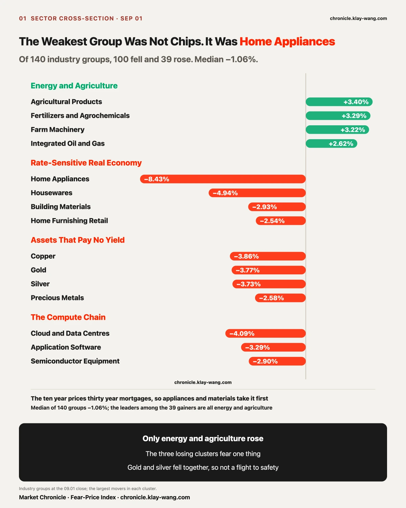
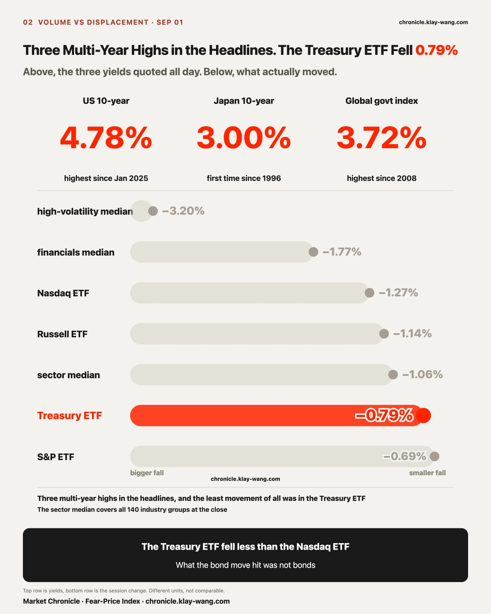
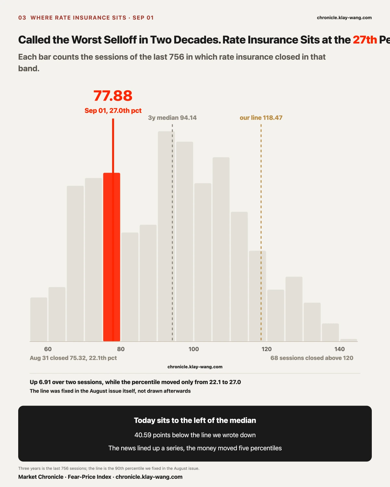
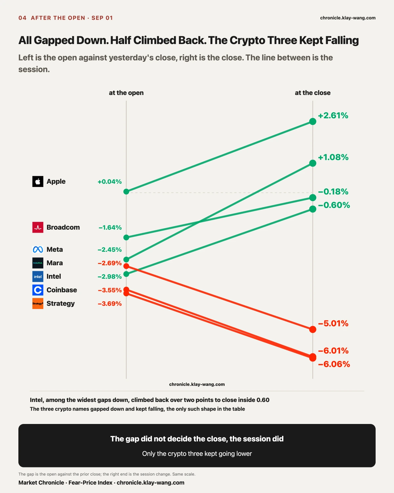
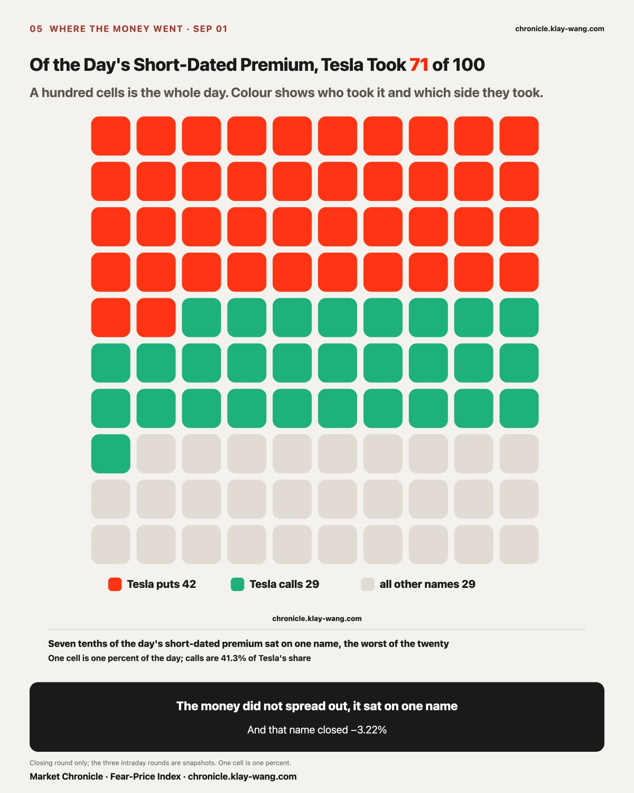
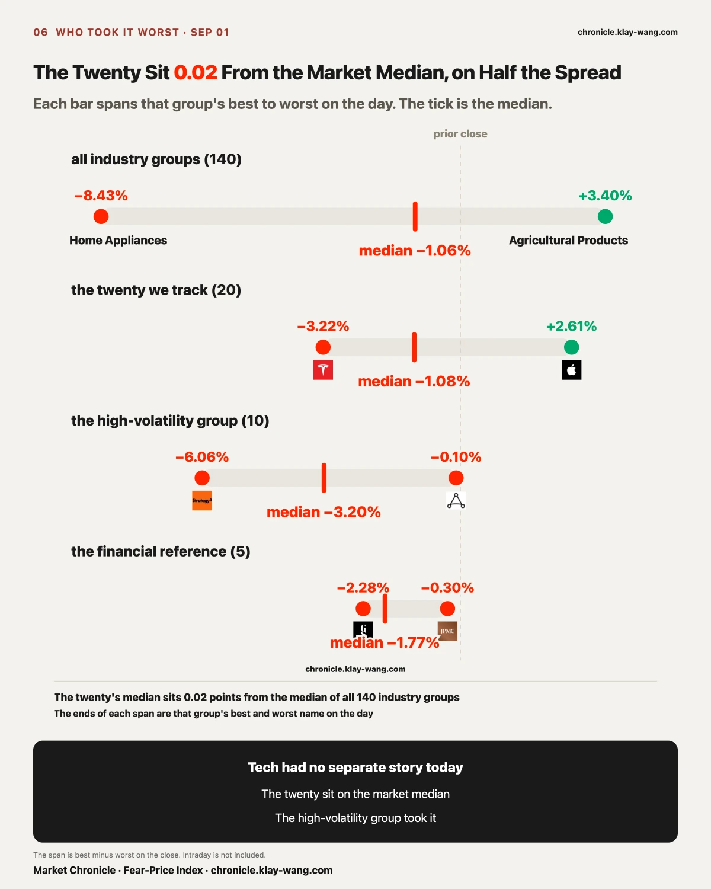
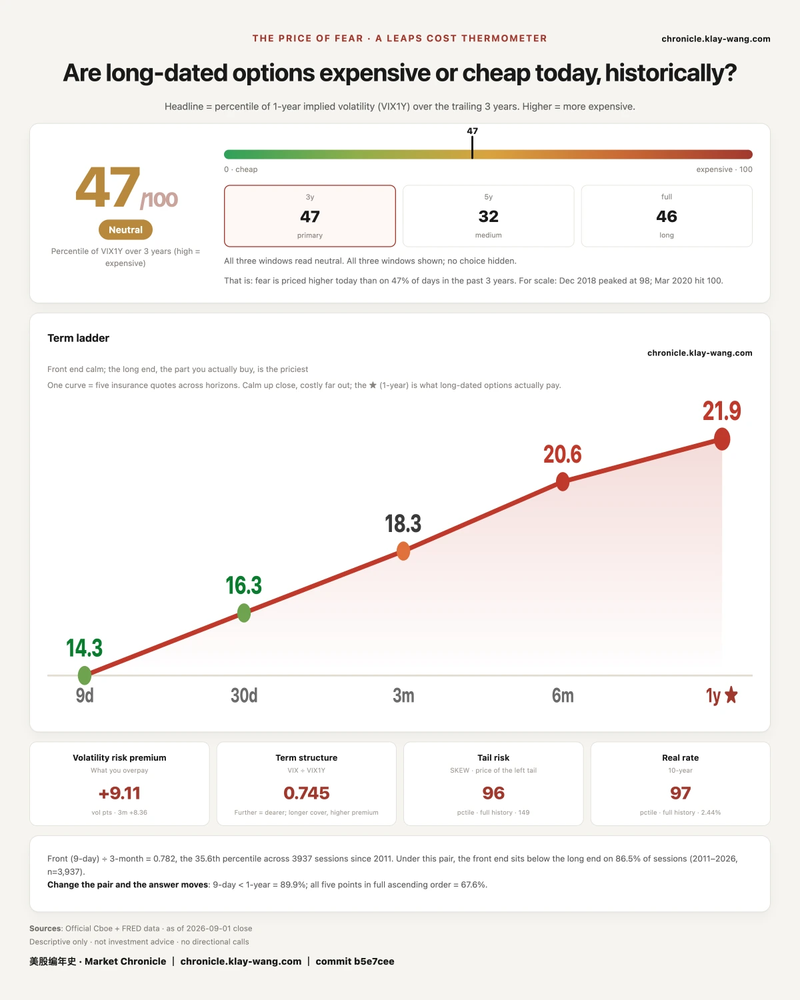

One. The US ten year at 4.78% is a multi-year high in level, while the day's move was about 5 basis points, and the Treasury ETF closed down 0.79%.
Two. What this round of rates hit was Home Appliances, gold and silver, and the compute chain. The Treasury ETF ranked 8th of the twenty we track.
Three. Seven tenths of the day's short-dated premium sat on Tesla, and seven tenths of that sat on contracts expiring 09.02.

Of 140 industry groups, 100 fell, 39 rose, and the median was −1.06%.
Sorted by decline, the first name has no direct connection to bonds: Home Appliances −8.43%, followed by Housewares −4.94%, Building Materials −2.93% and Home Furnishing Retail −2.54%. Semiconductor Equipment at −2.90% sits behind them, short by nearly a factor of three.
That path has a name. The ten year Treasury yield is the benchmark for thirty year mortgage rates, and the mortgage rate sets the monthly payment on a chain of decisions: move house, renovate, buy a large appliance. Lift the yield a notch and this group is the first whose cash flows get recomputed. Nobody's motive needs explaining and no order needs cancelling for it to bind. It is written into the discount rate.
The second cluster pays no yield: Copper −3.86%, Gold −3.77%, Silver −3.73%, Precious Metals −2.58%. Worth a pause. Supertankers were struck in the Strait of Hormuz, oil rose for a second session, WTI closed above 90 dollars, and by common sense gold should have been the day's strongest asset. It fell 3.77%, and silver fell with it. Gold and silver falling on the same day rules panic out as the explanation. Assets that pay no yield have nowhere to hide when real rates rise, which is the opposite of a flight to safety.
Among the 39 that rose, the leaders sit on one theme: Agricultural Products +3.40%, Fertilizers and Agrochemicals +3.29%, Farm Machinery +3.22%, Integrated Oil and Gas +2.62%, Oil and Gas Exploration +2.39%, Refining +1.83%. Everything that rose today comes out of the ground.

Today's tape was a stock and bond selloff: the Bloomberg global government bond index yield rose for a fourth session to 3.72%, the highest since mid 2008; the Japanese ten year touched 3.00%, the first time since 1996; the US ten year reached 4.78%, the highest since January 2025; the Australian ten year rose 7 basis points to 5.223%.
Four multi-year highs across the United States, Japan and Australia. The evidence on display is hard, which is why the line about the fiercest selloff in nearly two decades ran on every closing note today.
Now the prices. The Treasury ETF closed down 0.79%. The same day the S&P ETF fell 0.69%, the Russell ETF 1.14%, the Nasdaq ETF 1.27%, and the median industry group 1.06%. On the session defined as a bond selloff, the Treasury ETF fell less than the Nasdaq ETF and ranked 8th of the twenty we track, in the upper middle of the pack.
The gap sits in a place that is easy to skip past: headlines report a level, and prices answer to a change.
4.78% is a level, measured against every session since January 2025, which is what makes it a multi-year high. The displacement that actually occurred was from 4.75% on 08.31 to around 4.80%, roughly 5 basis points, with the two year about 6 and the thirty year about 4. Bond prices ignore the level and do arithmetic on the change. A handful of basis points, multiplied by the duration of long Treasuries, comes out at the order of 0.79%. That 0.79% is exactly what a few basis points should look like. It is neither a disorderly selloff nor a market ignoring the news.
Four multi-year highs and a 0.79% can therefore both be true without contradiction. Reading a level as though it were a change is what produces the conclusion that bonds broke.
A second ruler gives the same answer. The price of insuring against rate moves closed at 70.97 on 08.28, the 14.8th percentile of three years, jumped to 75.32 on 08.31 at the 22.1st, and rose again on 09.01 to 77.88, the 27.0th, up 6.91 over two sessions. The direction is up, two days running. But it measures expected future turbulence, not the level already reached. On a session called the fiercest selloff in two decades, insuring against rate moves still sits at the 27th percentile of three years, and on more than seven days in ten across those three years it cost more than today. The market read this move as an orderly repricing.
One more fact from the same day points the other way. The August ISM manufacturing PMI came in at 54.6, below the 55.2 expected and below the 55.6 prior, weaker on both comparisons. On days when growth data softens, the long end usually falls as growth expectations are marked down. Today it went the other way. Two facts pointing in opposite directions on the same day rule out one explanation: the bond market was not pricing growth today. It was pricing something else. US federal debt passed 40 trillion dollars in August, September is expected to bring roughly 200 billion in high grade corporate issuance competing for the same money, and after Warsh turned hawkish at Jackson Hole the swaps market moved the odds of a September hike from 34% to 65%, with Barclays and Societe Generale both folding September and December hikes into their base case.
Supply, deficits and the policy path. A soft PMI changes none of the three.
That also settles the account the August issue opened. That issue wrote that the market had paid for one and not for a series, and fixed the void condition at this ruler clearing the 90th percentile of three years. On 09.01 the news did line up a series, with two hikes now sitting in two banks' base cases, while the money paid for disorder moved only from the 22.1st percentile to the 27.0th, and the line is drawn at the 90th. The call was measured against its own written criterion and it stands.

Almost everything gapped down. The open and the close describe two different things.
Meta gapped down 2.45%, travelled 3.62% during the session and closed up 1.08%. Apple gapped 0.04%, travelled 2.57% and closed up 2.61%, the best of the twenty. Cook stepped down on 09.01, Ternus took over, and the stock rose 2275% during his tenure. That was among the loudest corporate stories of the day, and it drew zero reaction in the opening price. The whole gain was bought after the bell. The news was known before the open, and the price waited for the session.
Intel gapped down 2.98%, climbed back 2.45% and closed −0.60%. Marvell matched it in shape and size. Broadcom gapped down 1.64% and closed −0.18%. The group briefly took the Philadelphia semiconductor index down 3% early, and by the close most of it had recovered half to three quarters.
One group is the only exception in the table. It gapped down and kept falling. Strategy gapped 3.69% and closed −6.06%, Coinbase gapped 3.55% and closed −6.01%, Mara gapped 2.69% and closed −5.01%. Three crypto names, three that kept going lower.
They land in the same place as gold and silver. Crypto assets and precious metals share one property: they pay no yield. When real rates rise, the opportunity cost of holding them moves in the same direction, so they go into the same drawer. The difference is size. Gold fell 3.77% today and these three fell 5% to 6%. The same force applied at the more levered end produces exactly that amplification.

The closing round of unusual short-dated prints totalled 484.9 million dollars across 17 names.
The total alone says nothing. Tesla alone took 344.2 million, 71% of the day. Broadcom was second at 59 million and Apple third at 34 million, and the two together come to under three tenths of Tesla. Short-dated premium concentrating to that degree in one session is uncommon on its own.
Break the 344.2 million one layer further and the shape appears: 237.4 million expires 09.02, 101.5 million expires 09.04, and the 09.11 and 09.09 buckets together come to 5.3 million. Seven tenths of the day sat on one name, and seven tenths of that name sat on tomorrow.
A one day contract gets no second chance. Its return is written on the closing price of 09.02, and whether the company is right or wrong, whether the quarter is good or bad, whether the chief executive changes, is irrelevant to it. Both near expiries lean to the put side: 09.02 carries 146.6 million in puts against 90.87 million in calls, and 09.04 carries 55.59 million against 45.86 million. Tesla closed −3.22%, the worst of the twenty.
One reading here looks contradictory at first. Tesla posted the largest thirty day decline in insurance of the twenty one names, at −1.00. The name that fell hardest and absorbed seven tenths of the day's premium became cheaper to insure for a month.
The contradiction is only on the surface. Constant maturity insurance prices the next thirty days, and this money is on tomorrow. Buyers of tomorrow have no reason to pay for next month, and sellers of tomorrow have no reason to mark next month up. The two numbers explain each other: the money sat on tomorrow and not on the month, so the month did not get more expensive.

Measure the three groups on one ruler. The twenty we track closed at a median of −1.08% with a spread of 5.83 points. The ten high-volatility names had a median of −3.20% and a spread of 5.96. The five financial reference names had a median of −1.77% and a spread of only 1.98.
The median of all 140 industry groups was −1.06%.
The twenty we track sit 0.02 points from the whole market. Technology took no extra punishment today and ran no separate move. What actually took it was the high-volatility group, with a median decline three times that of the twenty, and the three worst names in that group are the same three crypto names above.

The first half has four multi-year highs behind it. The second half needs a number to stand up.
If bonds were hitting stocks, the heaviest damage should land on the financial assets most sensitive to rates. What happened: the Treasury ETF fell 0.79% and ranked 8th, the five financial reference names had a spread of 1.98 points and were the tidiest of the three groups, and the names that fell 6% were three crypto stocks.
Rates did hit something. Home Appliances at −8.43%, Gold at −3.77%, Cloud and Data Centres at −4.09%. They hit the things whose cash flows have to be discounted at a higher number, and the people holding bonds took the lightest blow of the day.
No trade suggestions below. Only prices converted into things you can judge for yourself.
Holding broad ETFs: the median of the twenty sits 0.02 points from the median of the whole market, so there was no structural divergence in this session. The index fell because the market fell. Thirty day insurance rose on eighteen of twenty one names while the one year rose on ten, so what got more expensive is the next month of cover alone.
Holding semiconductors: the Philadelphia index fell 3% early and Intel and Marvell each recovered over two points by the close. The decline came at the open and the recovery came during the session, and those two segments do not have their cause in the same place. Judge this group on the path. The closing price will not show it.
Holding Tesla: seven tenths of the day's premium sat on it and seven tenths of that expires tomorrow. That money expresses a view on 09.02 and has nothing to do with the company's quarter. Its one month insurance became 1.00 point cheaper today.
Holding Apple: on the day of the handover the opening price barely moved, the entire gain came intraday, and one year insurance slipped 0.08. The market is treating the succession as a known fact.
Holding crypto names: these three are the only group in the table that gapped down and kept falling. They went into the same drawer as the precious metals, with more leverage, which is why the size is larger.
The implications are laid out. What to do with them is each person's own account.
One. Level and change are two different quantities. A multi-year high describes a level, while prices do arithmetic on the day's change, and reading one as the other produces a crash that never happened.
Two. The gap and the close are two different rulers. The gap usually has its cause overnight and the close has its cause during the session, and separating them tells you whether a name was carried down or walked down.
Three. On a day when gold and silver fall together, do not read it as a flight to safety. Real rates drive those days, assets that pay no yield have nowhere to hide, and the more levered end falls further.
The August issue's bond call was measured once today and was not overturned. Filed reading: the bond ruler closed 75.32 at the 22.1st percentile on 08.31. Today: 77.88, the 27.0th, up 6.91 over two sessions. One void condition fixed in that issue was this ruler clearing the 90th percentile of three years, and today it stopped at the 27.0th, untriggered. The other only starts counting once a September hike lands, so it does not apply today. The criteria stand: if the one year reading clears 55 within three sessions of a September hike landing, or this ruler clears the 90th percentile of three years, the passage is withdrawn. The next natural test is the meeting on 09.16 to 09.17. One year quotes and the bond ruler only.
Tesla's 237.4 million in the 09.02 bucket settles by itself tomorrow. Today's reading: 146.6 million in puts against 90.87 million in calls, close at 356.09. Criterion: whichever side the 09.02 close lands on, that half of the bucket wins. Closing prices and the closing round of the short-dated table only.
Whether the thirty day and one year split converges. Today's reading: eighteen of twenty one repriced higher at thirty days, ten at one year. Criterion: if any September session has more one year names repricing higher than thirty day names, this split was event driven; if the near end keeps rising while the far end stays put, the pricing centre really is only at the near end. The 15:45 constant maturity table only.
Whether Apple's handover gets priced late. Today's reading: gap +0.04%, session +2.61%, one year insurance from 28.58 to 28.50. Criterion: if Apple's one year insurance clears 30 during September, the market has re-read the succession as a variable; if it stays around 28, today's reading holds. The 15:45 constant maturity table only.

One more ruler measures the same question, and it is computed independently of the bond one.
The Fear-Price Index reads 46.8 today. It ranks one year volatility against the last three years, and higher means dearer. Across the last eight sessions: 61.8 on 08.21, down to 45.5 on 08.31, and back to 46.8 on 09.01. Fifteen percentiles given up over eight sessions, 1.3 recovered today.
How that 1.3 arrived deserves a sentence. One year volatility moved from 21.87 to 21.93, a move of 0.06, while the rank moved 1.3. It sits in the densest part of the distribution, where a small move in the level pushes a lot of ranks. The reverse holds too: at this position the rank jumps around far more than the price does, so a jumping rank should not be read as a violently moving price.
Today's quotes across tenors: nine day 14.33, thirty day 16.34, three month 18.33, six month 20.56, one year 21.93, rising from near to far in a standard contango. The further out you go, the more the people willing to quote want, and what got marked up today was only the nearest bucket.
The bond ruler sits at the 27th percentile and the equity ruler at the 46.8th. Two rulers from different markets, different formulas, different market makers, saying one thing today: on a session called the fiercest selloff in two decades, the price of long dated insurance did not follow.
The people who sell insurance set this price, and the people who buy it pay what is set. The front end is sentiment and one headline can move it. The back end is cost. Market makers must quote, do not guess direction, and compute only what they need to charge on that risk to avoid a loss. When it really moves, someone's cost model has changed. Today it barely did.
Fear-Price Index by Market Chronicle · 2026-09-01 · 46.8/100: one-year volatility VIX1Y at 21.93, in the 46.8th percentile over three years, where high means expensive. Daily ledger and definitions → chronicle.klay-wang.com · Credit: Fear-Price Index · Market Chronicle
Options flow and single names, updated daily → chronicle.klay-wang.com/options
Gauge readings and both ledgers → chronicle.klay-wang.com